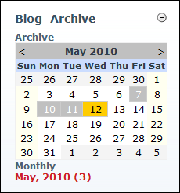

Viewing Blog Entries for a Single Date
How to view all of the blog entries made on a selected date on the Blog module.
Tip: Days with blog entries are shaded gray on the calendar. the current day is shaded yellow.
- Go to the Blog_Archive module.
- Locate the required month using the Calendar as follows:
- Go to the Previous Month: Click the < button located in the top left corner of the calendar.
- Go to the Next Month: Click the > button located in the top right corner of the calendar.
- Select the required date. This displays the related blog entries in the View_Blog module.

Viewing all blog entries for a date